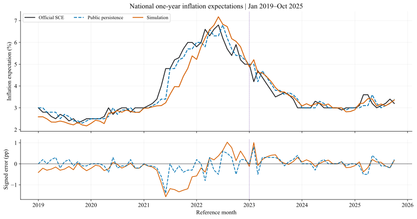
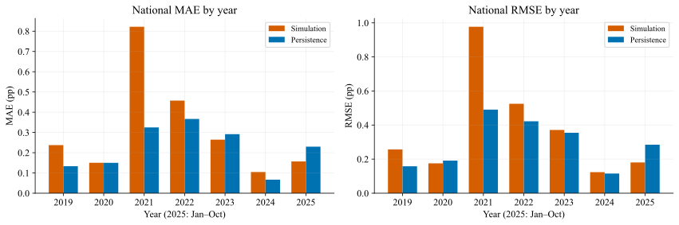
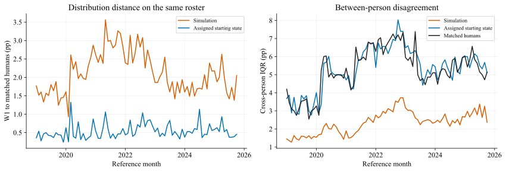
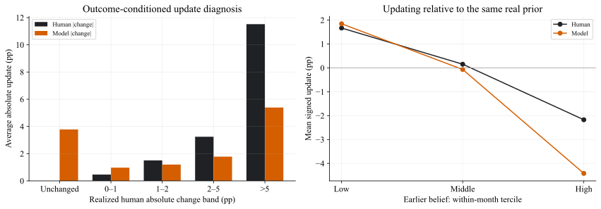
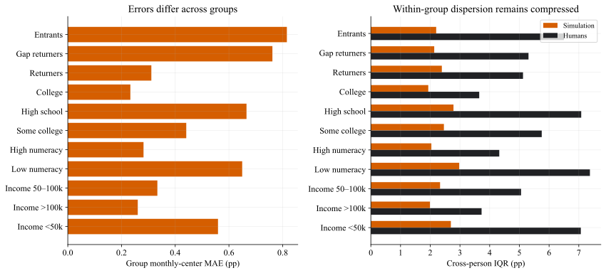
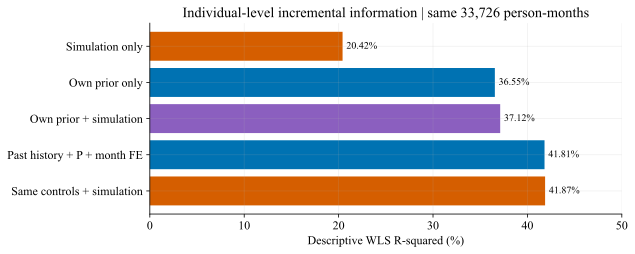

2019-01—2025-10 · 82个月 × 每月512人 · DeepSeek V3.2 / SiliconFlow FP8 · 历史条件重建A线
美国居民通胀预期：全时段重建结果
全期尚未超过持续性基线；2023年以后出现宏观收益，微观分歧与个体增量仍是主要缺口。
本报告分析已完成的41,984个人月，技术修复后41,982份完整，剩Q8 1份/Q9 2份按冻结规则后备。Q9同支持可计分真人为40,933个人月；真人原始问卷也存在计分不支持，并非其余都属于模型接口失败。主运行一次，修复不算新增人口或独立重复生成。本次分析0 API调用、0 Q9重新拟合、0机制修改。
一、总体拟合：全期差距集中在2021年
| 比较对象 | 模型中心MAE（pp） | 相应基线MAE（pp） | 基线含义 |
|---|---|---|---|
| 相同人群Q9 | 0.315 | 0.226 | 保留分配起点，含真实与合成 |
| 完整真人波次Q9 | 0.312 | 0.205 | 上期完整微观波次 |
| 官方全国Q9 | 0.317 | 0.223 | 截止前最后公开全国值 |
| 相同人群Q8（单列） | 0.815 | 0.356 | 保留分配的Q8起点 |

2021年模型全年低估，MAE 0.822pp，12个月均未胜过基线。2025年1—10月则为0.157pp，对照0.230pp，胜出8/10个月。2024年基线更强，因此不能将“后期平均较好”表述为“每年都胜出”。

| 年份 | 月份数 | 模型MAE | 基线MAE | 模型偏差（pp） | 模型胜出月 |
|---|---|---|---|---|---|
| 2019 | 12 | 0.237 | 0.133 | -0.233 | 3/12 |
| 2020 | 12 | 0.150 | 0.150 | -0.133 | 4/12 |
| 2021 | 12 | 0.822 | 0.325 | -0.822 | 0/12 |
| 2022 | 12 | 0.457 | 0.367 | 0.262 | 5/12 |
| 2023 | 12 | 0.264 | 0.292 | 0.225 | 7/12 |
| 2024 | 12 | 0.105 | 0.067 | 0.024 | 3/12 |
| 2025 | 10 | 0.157 | 0.230 | -0.034 | 8/10 |
全期模型−基线MAE差0.094pp，6月区块配对95%区间[0.004, 0.213]。后34月差-0.018pp，区间[-0.064, 0.020]，跨0；属于既有轨迹的回顾性不确定性，不能证明未来必然胜出。
二、加权组合：冻结权重未保留模拟增量
公式为 (1−λ)×截止前公开历史SCE + λ×本月模拟。2019—2022年48个月拟权，2023—2025年10月34个月评价；λ限制在0—1，无截距。
| 拟合目标 | 模拟权重λ | 历史权重 | 后34月组合MAE（pp） | 组合RMSE（pp） |
|---|---|---|---|---|
| MAE | 0.000 | 1.000 | 0.194 | 0.270 |
| MSE | 0.000 | 1.000 | 0.194 | 0.270 |
MAE和MSE均选λ=0，已复算核实。原因是拟权期模型MAE 0.417pp、高于历史基线0.244pp。因此最终冻结组合的后34月MAE是0.194pp，不是纯模型的0.176pp。后期纯模型较好，没有自动转化为事前固定组合收益；本轮不据后期结果重新挑权重。
三、微观结构：中心接近时，人际差异仍明显收缩
| 指标（同一人群） | 模型 | 保留起点 | 解释或真人值 |
|---|---|---|---|
| 跨人W1（pp） | 2.114 | 0.537 | 越小越接近真人 |
| 跨人IQR（pp） | 2.349 | 5.321 | 5.256（真人） |
| 个人中心MAE（pp） | 3.548 | 3.409 | 同一真实有效支持 |
| 个人密度内部IQR（pp） | 3.941 | 5.827 | 5.651（真人） |
| 零通缩概率占比 | 31.8% | 53.3% | 54.4%（真人） |
| 个人中心秩相关 | 0.473 | 0.557 | 沿冻结普通Spearman口径 |

将每月模型和真人的中位数在评价层对齐后，W1仍约2.081pp（原值2.114pp），说明分布差距主要不是一个共同中心平移。按54格作月内描述性方差分解，约87.0%的净方差缺口位于格内。该比例描述样本中的分解，不是人口特征的因果贡献。
信念更新：不变的人被改动，大变动又被压小
只用33,726个真实相邻回访个人月：两边都减去同一个本人真实上期值。不是自主递推。模型更新分布W1明显优于完全不更新，但个人更新方向一致率约50.3%。
| 更新指标 | 模型 | 对照或真人 |
|---|---|---|
| 变化分布W1（pp） | 1.244 | 2.906（完全不更新） |
| 保持不变比例 | 7.4% | 16.7%（真人） |
| 变化超过2pp比例 | 28.0% | 37.6%（真人） |

四、误差人群：低数理、低收入与新人更困难

| 人群 | Q9个人月 | 满足支持月数 | 组中心MAE（pp） | W1（pp） | 模型 / 真人IQR |
|---|---|---|---|---|---|
| 首次受访 | 4862 | 82 | 0.816 | 2.996 | 2.200 / 6.501 |
| 间隔后回访 | 2019 | 60 | 0.762 | 2.592 | 2.134 / 5.307 |
| 回访者 | 34178 | 82 | 0.311 | 2.003 | 2.390 / 5.123 |
| 大学及以上 | 16639 | 82 | 0.233 | 1.486 | 1.934 / 3.648 |
| 高中及以下 | 9770 | 82 | 0.665 | 2.688 | 2.782 / 7.082 |
| 部分大学教育 | 14337 | 82 | 0.441 | 2.393 | 2.460 / 5.752 |
| 高数理 | 23334 | 82 | 0.282 | 1.895 | 2.037 / 4.323 |
| 低数理 | 17721 | 82 | 0.649 | 2.620 | 2.975 / 7.375 |
| 收入5—10万美元 | 13119 | 82 | 0.334 | 2.111 | 2.331 / 5.057 |
| 收入>10万美元 | 12167 | 82 | 0.261 | 1.494 | 1.990 / 3.728 |
| 收入<5万美元 | 15307 | 82 | 0.559 | 2.710 | 2.694 / 7.068 |
回访者Q9中心MAE约0.311pp，新人约0.816pp；新人个体身份先验不可观测，且其真人分布更宽。即使只看真实相邻上期者，模型W1约1.967pp，对照照抄本人上期0.512pp，说明微观问题不只来自新人。
全部分组与54格月度支持
完整聚合数据见summary.json的groups，含各格/单维分组的月度N、ESS、是否仅描述及指标。没有支持的月份不进入本页人群排名；未知画像另列。总体中位数/W1不等于分组指标的加权平均。
五、个人增量：历史解释力仍显著强于模拟

模拟单独R²为20.42%，上期单独为36.55%。在历史常态/次数、人口与月份共同因素之后加入模拟，R²从41.812%升至41.873%，仅增加0.061个百分点；对原残余解释约0.105%。这是条件增量较小的证据，不是单凭共线性或一个不显著系数作判断。
回归系数怎样解释？
加入模拟后的模拟系数约0.059；历史常态相对上期的差值系数约0.432。本模型同时放入上期与“常态−上期”，展开后上期系数为0.282、常态系数为0.432，不能直接把原上期系数当行为权重。答题次数系数0.016pp/次是条件关联，不能证明老手更关注通胀。未给出假定人月独立的标准误或显著性星号。
六、验收、边界与下一阶段
- 1476项逐月指标与冻结结果相符；本轮未发现需要更改口径或机制的实现bug。
- 技术补齐前后同支持中心MAE变化-0.00317pp；全国MAE由0.317到0.317pp。技术修复未改变主要判断。
- 剩余两份不再请求；其可能取值对相应月中位数的保守范围见下表。此表固定其余模型值和当前有效真人支持，不是对答案作填补。
| 月份 | 字段 | 未成功数 | 该月权重占比 | 所有可能补值下的中位数范围（%） |
|---|---|---|---|---|
| 202306 | Q9 | 1 | 0.371% | 4.13317—4.13822 |
| 202411 | Q8 | 1 | 0.340% | 2.80000—2.80000 |
| 202411 | Q9 | 1 | 0.351% | 2.79618—2.81373 |
累计API报告费$29.1340，含未知失败费用预留记账$30.3588，不是额外扣费。本轮分析费用$0；不再补这两份。
- 固定现有配置和这份历史证据；报告同时呈现全期不足与后期收益，不再追逐已看月份调参。
- 准备2025-11至2026-09近期阶段：先核P/E历史可得版本、合成起点和全国锚。当前82月属于A条件重建，不能直接宣称严格B预测成功。
- 完善研究包、复算命令和报告：原始/技术补齐分开，许可与发布范围明确；近期无微观真值月先只评全国指标。
本报告的48/34月划分是组合权重的时间外评价。部分月份曾参与机制开发，既有模型知识污染边界仍在；单次主生成无法估计LLM重复生成噪声，技术补跑不提供独立重复样本。